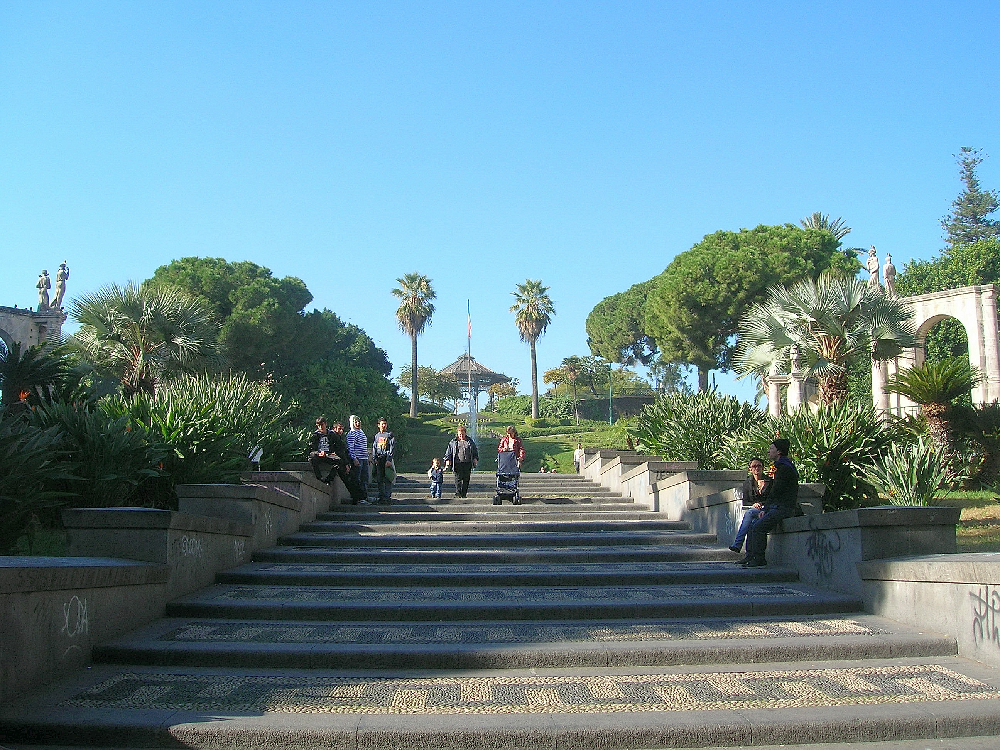

1|
Piazza del Duomo
8.5/10
Piazza del Duomo di Catania è la principale piazza della città. In essa confluiscono tre strade, ovvero la via Etnea, la storica asse cittadina, la via Giuseppe Garibaldi e la via Vittorio Emanuele II che la attraversa da est ad ovest. Sul lato orientale della piazza sorge il Duomo, dedicato alla patrona della città festeggiata il 5 febbraio.
Se venite a Catania visitarla è d'obbligo
2|
Villa Bellini
7/10
A Catania in via Etnea vicino al Palazzo delle Poste si trova Villa Bellini, un giardino pubblico considerato fra i più belli d'Europa. Intitolata al celebre compositore catanese Vincenzo Bellini, la Villa appartenne sin dall'inizio del 1700 ai principi Paternò Castello di Biscari, ed era caratterizzata da un giardino chiamato "Labirinto" per via dell'intreccio dei suoi viali. Nel 1854, la proprietà passò al Comune di Catania che commissionò a vari professionisti, ma la loro competizione non fece partire i lavori, solo in seguito fu affidato all'architetto Ignazio Landolina la trasformazione del giardino da residenza privata a parco pubblico. I lavori terminarono nel 1883 e il parco venne aperto alla cittadinanza.
"I giardini di Villa Bellini ospitano stupendi alberi secolari e centinaia di piante esotiche, i viali sono adornati da statue e busti di personaggi illustri".
Raccomandata per giornate estive

3|
Lungomare di Ognina
9/10
Il Lungomare di Ognina è il luogo ideale per fare una passeggiata oppure una corsetta a Catania, a pochi passi dal cuore della città. E oggi, grazie alla pista ciclabile, è così anche il luogo preferito dei ciclisti. Passeggiando lungo la costa si può ammirare il mare , ci si può sedere su una delle tante panchine per riposarsi oppure ci si può prendere un gelato in uno dei tanti locali storici. In Piazza Nettuno si trova un campetto da basket e una zona per fare sport all’aperto. E non possiamo non ricordare la grande piazza di divertimento.
Ideale per le persone sportive
4|
Castello Ursino
10/10
Costruito per volere di Federico II tra il 1239 e il 1250, il Castello Ursino nacque all’interno del progetto difensivo delle coste orientali siciliane e sorgeva su un promontorio circondato dal mare.
Il progetto dell’edificio fu ideato e realizzato per mano dell’architetto Riccardo da Lentini che decise di renderlo simbolo dell’autorità e del potere imperiale. Nel 1934 fu restaurato con l’intento di riportarlo all’originale stile svevo (dove non fu possibile a quello rinascimentale), e divenne la sede del Museo Civico di Catania.
Perfetto per conoscere la storia di Catania
5|
Teatro Massimo Bellini
8/10
Il Teatro Massimo “V. Bellini”, costruito su progetto dell’architetto milanese Carlo Sada, è stato inaugurato nel 1890. Nella sua sala da milleduecento posti, dall’acustica perfetta, si svolgono ogni anno una stagione d’opera ed una stagione sinfonica e da camera. Il “Bellini” dispone di un’orchestra di 105 elementi, di un coro di 84 elementi, di un nutrito gruppo di tecnici di palcoscenico e di laboratori scenografici. È chiaramente possibile, per coloro che vogliono semplicemente visitarlo, poterlo fare grazie alle visite guidate che sono organizzate dallo staff interno al Teatro.“
Ottima meta per gli amanti dello spettacolo